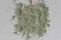

|
|
(For further information on spectroscopy, see:
http://speclab.cr.usgs.gov)
TITLE: Illite IMt-1 DESCRIPT
DOCUMENTATION_FORMAT: MINERAL
SAMPLE_ID: IMt-1
MINERAL_TYPE: Phyllosilicate
MINERAL: Illite, a group of hydrated mica-clay minerals
FORMULA: (K,H3O)(Al,Mg,Fe)2(Si,Al)4O10[(OH)2,H2O]
FORMULA_HTML: (K,H3O)(Al,Mg,Fe)2(Si,Al)4O10[(OH)2,H2O]
COLLECTION_LOCALITY: Silver Hill, Montana
ORIGINAL_DONOR: Clay Mineral Society Source Clay Mineral Repository
CURRENT_SAMPLE_LOCATION: USGS Denver Spectroscopy Laboratory
ULTIMATE_SAMPLE_LOCATION: USGS Denver Spectroscopy Laboratory
SAMPLE_DESCRIPTION:
A spectrum of this sample was published by:
Clark, R.N., T.V.V. King, M. Klejwa, G. Swayze, and N. Vergo, 1990, High spectral resolution reflectance spectroscopy of minerals: J. Geophys Res. 12653-12680.
who noted that it was spectrally pure. Samples measured for the library include bulk (a) and less than 2µm fraction (b).
The spectrum from 2.5 to 25µm for this sample was published in:
Salisbury, J. W., Walter, L. W., and Vergo, N., 1987, Mid-Infrared (2.1-25µm) Spectra of Minerals: First Edition, U.S. Geological Survey Open File Report 87-263.
IMAGE_OF_SAMPLE:

END_SAMPLE_DESCRIPTION.
XRD_ANALYSIS:
Analysis by Norma Vergo indicates that the bulk sample is illite + quartz, less than 2µm separate is pure illite/smectite with 95% illite layers.
END_XRD_ANALYSIS.
COMPOSITIONAL_ANALYSIS_TYPE: EM(WDS) # XRF, EM(WDS), ICP(Trace), WChem
| COMPOSITION KEYWORD |
Oxide ASCII |
Amount | Weight Percent, % |
Oxide html |
|---|---|---|---|---|
| COMPOSITION: | SiO2 | 52.10 | wt% | SiO2 |
| COMPOSITION: | TiO2 | 0.79 | wt% | TiO2 |
| COMPOSITION: | Al2O3 | 21.90 | wt% | Al2O3 |
| COMPOSITION: | Fe2O3 | 6.44 | wt% | Fe2O3 |
| COMPOSITION: | MnO | less than 0.02 | wt% | MnO |
| COMPOSITION: | MgO | 2.39 | wt% | MgO |
| COMPOSITION: | CaO | 1.07 | wt% | CaO |
| COMPOSITION: | Na2O | 0.30 | wt% | Na2O |
| COMPOSITION: | K2O | 7.84 | wt% | K2O |
| COMPOSITION: | P2O5 | 0.10 | wt% | P2O5 |
| COMPOSITION: | LOI | 6.91 | wt% | LOI |
| COMPOSITION: | Total | 99.56 | wt% | |
| COMPOSITION: | O=Cl,F,S | wt% | #correction for Cl, F, S | |
| COMPOSITION: | New Total | wt% |
COMPOSITION_TRACE:
COMPOSITION_DISCUSSION:
EM analysis by Gregg A. Swayze, Branch of Geophysics, USGS, Denver.
END_COMPOSITION_DISCUSSION.
MICROSCOPIC_EXAMINATION:
END_MICROSCOPIC_EXAMINATION.
SPECTROSCOPIC_DISCUSSION:
Note: the Illite IMt-1.a is all grain sizes and thus has spectral purity b in the UV-NIR, while sample Illite IMt-1.b, the <2um fraction removed the quartz and made the spectral purity an a
END_SPECTROSCOPIC_DISCUSSION.
SPECTRAL_PURITY: 1b2b3b4_ # IMt-1.a # 1= 0.2-3, 2= 1.5-6, 3= 6-25, 4= 20-150 microns
SPECTRAL_PURITY: 1a2a3a4_ # IMt-1.b <2um # 1= 0.2-3, 2= 1.5-6, 3= 6-25, 4= 20-150 microns
| LIB_SPECTRA_HED: | where | Wave Range | Av_Rs_Pwr | Comment |
|---|---|---|---|---|
| LIB_SPECTRA: | splib04a r 2362 | 0.2-3.0µm | 200 | g.s.= |
| LIB_SPECTRA: | splib04a r 2373 | 0.2-3.0µm | 200 | g.s.= less then 2µm |
| LIB_SPECTRA: | splib05a r 3576 | 0.2-3.0µm | 200 | g.s.= |
| LIB_SPECTRA: | splib05a r 3589 | 0.2-3.0µm | 200 | g.s.= |
| LIB_SPECTRA: | splib06a r 10982 | g.s.= | ||
| LIB_SPECTRA: | splib06a r 10996 | g.s.= | ||
| LIB_SPECTRA: | splib06a r 11041 | g.s.= | ||
| LIB_SPECTRA: | splib06a r 11055 | g.s.= |
{kind=link}